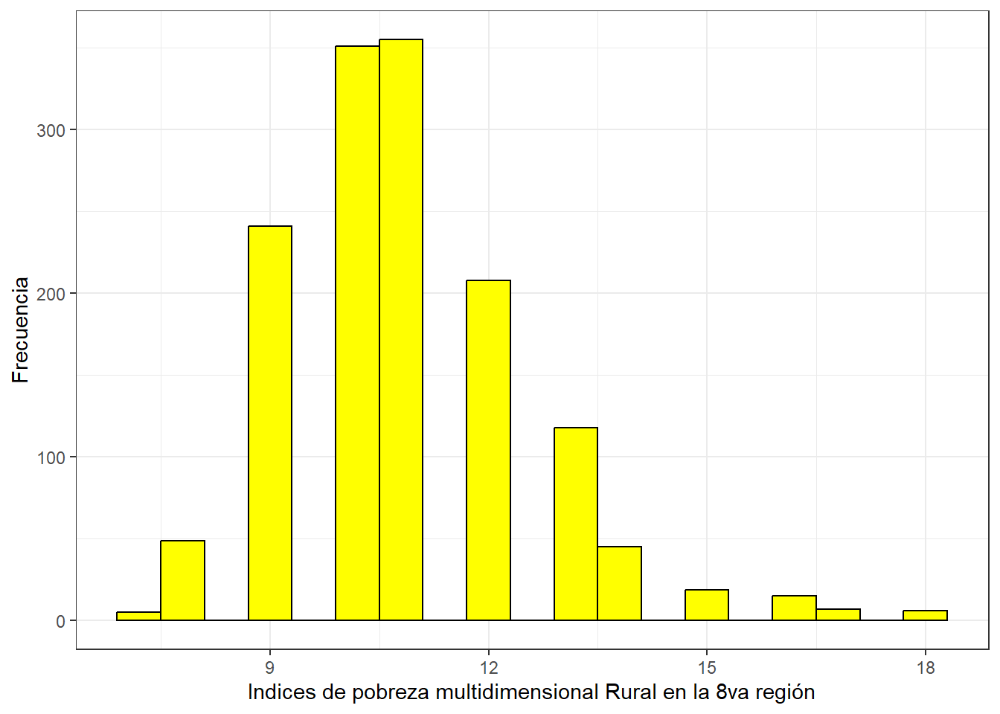

Análisis de la pobreza multidimensional en los sectores rurales de Chile: estudio local en la región del Bío-Bio.
La pobreza en Chile ha sido un fenómeno que ha acompañado al desarrollo del país constantemente y la medición de esta se ha realizado de manera más formal y sistemática a partir de la aplicación de la Encuesta de Caracterización Socioeconómica Nacional (CASEN), la cual ha implementado la medición de la pobreza multidimensional a partir del año 2013 (Herrera, n.d.), con el fin de aportar a una comprensión más amplia y detallada de las condiciones de vida de la población, implementando dimensiones como educación, salud, trabajo, vivienda y redes sociales.
Ahora bien, si llevamos esta medición de la pobreza multidimensional a los sectores rurales, podremos ver como los indicadores multidimensionales nos permiten agudizar el análisis, permitiendo así obtener una información mas detallada de las condiciones de vida de las personas en los sectores rurales del país.
Según un análisis comparativo de las carencias y brechas en los hogares rurales de Chile, se plantea que, a nivel general, las carencias se encuentran mas acentuadas en las zonas rurales y que estas se agudizan al utilizar indicadores multidimensionales para su medición. (Rodríguez-Garcés, Muñoz-Soto, and Padilla-Fuentes 2018) Por lo que llevar a cabo un análisis de la evolución de estos indicadores en comparación a sectores urbanos, nos proporcionará una información más detallada de las condiciones de vida de estos sectores.
Por otro lado, cabe señalar que la relación entre educación, ruralidad y pobreza no es algo sencillo, y si consideramos el rol de la educación a la hora de reducir la brecha de desigualdades en las oportunidades, podremos observar que la educación para la población rural ha sido escasamente atendida. (Vera-Bachmann 2015) Esto ha llevado a que la brecha de desigualdad social se mantenga en el país.
Para los efectos de este trabajo consideraremos las definiciones manifestadas por el Ministerio de Vivienda y Urbanismo en el decreto N° 47, (decreto1992?) en el cual se refiere a un Área urbana como la superficie del territorio ubicado al interior del límite urbano; un Área rural como territorio ubicado fuera del límite urbano; y Límite Urbano como la línea imaginaria que delimita las áreas urbanas.
Con lo anterior, nos referiremos al fenómeno de pobreza multidimensional según la medida oficial de Chile, la cual incluye 5 dimensiones que son reconocidas como socialmente necesarias. Estas dimensiones son: Educación; Salud; Trabajo y seguridad social; Vivienda y Entorno; Redes y Cohesión social. (PNUD?)
Ahora bien, por efectos de lo que se pretende llevar a cabo en este estudio, se acotará el estudio a la 8va región de Chile, la “Región del Biobío”, ya que esta región presenta un alto porcentaje de su población viviendo en áreas rurales.
Con lo anterior, llevaremos un análisis en base a los resultados obtenidos por la CASEN2022, con el fin de ver como se comporta la pobreza multidimensional en la región del Biobío. Para esto procederemos a manipular la base de datos con el fin de poder observar las distintas mediciones y su comportamiento.
Trabajo en R: Ajustes iniciales, carga de paquetes y base de datos:
Warning: package 'pacman' was built under R version 4.2.3
pacman::p_load(haven, sjlabelled, dplyr, #Manipulacion de datos stargazer, #Tablas sjmisc, # Tablas summarytools, # Tablas kableExtra, #Tablas sjPlot, #Tablas y gráficos corrplot, # Correlaciones sessioninfo, # Información de la sesión de trabajo ggplot2) # Para la mayoría de los gráficos# 1.Base de datos:load(file ="Input/Proc_data.RData")
Generated by summarytools 1.0.1 (R version 4.2.1) 2024-06-12
Si observamos brevemente la información proporcionada por la tabla descriptiva, podemos observar que una vez recodificada y filtrada la base de datos, nos quedamos con un total de 1419 observaciones en la región del Biobío de un total de 1.556.805 millones de habitantes según el Censo 2017. Correspondientes unicamente al sector rural de la región por lo que tenemos una muestra considerablemente representativa.
A esto, podemos agregar información relevante para ver como se comporta la pobreza multidimensional en las áreas rurales de la región, tales como el Nivel Socioeconómico que predomina, en este caso un nivel Socioecónmico Bajo, con un total de 1.113 personas. Además de información respecto al nivel educativo de las personas, el cual nos indica que en su mayoría, las personas tienen una educación media completa (639 personas) o una educación básica completa (488 personas).
En cuanto al trabajo u ocupación predominante, podemos observar que corresponde a las ocupaciones manuales y técnicas, siendo un total de 43,5% de los encuestados.
ggplot(Proc_data, aes(x = Sistema_salud)) +geom_bar(fill ="coral") +labs (title ="Sistema previsional de Salud que predomina")
Podemos observar en el gráfico correspondiente al nivel educacional, que el nivel educativo que predomina en las personas que viven en áreas rurales de la 8va región corresponde a las categorías de Educación Básica y Educación Media.
Además, si observamos el gráfico correspondiente al tipo de vivienda, podemos observar que el tipo de vivienda que predomina en las áreas rurales de la 8va región corresponden a la primera categoría, la cual corresponde al tipo de vivienda de “casas aisladas (no pareadas)” siendo esta el 98,3% de la muestra.
A lo anterior podemos agregar que el sistema previsional de salud que predomina en las áreas rurales de la región corresponde a una afiliación al sistema público FONASA, con un 92,8% de la muestra.
Correlación:
#4.Correlación:## Seleccionamos las variables de interés:Proc_data_cor <- Proc_data %>%select(nse, Nivel_educacional, Trabajo_oficio, Sistema_salud, Red_apoyo, Tipo_vivienda)## Realizamos la correlaciónProc_data_cor <-mutate_all(Proc_data_cor, as.numeric)cor_proc_data <-cor(Proc_data_cor,use ="complete.obs")cor_proc_data
En cuanto a la tabla de correlaciones, podemos observar que las relaciones mas significativas se encuentran asociadas a la relacion negativa entre el nivel educacional y el tipo de trabajo u oficio (-0476). La relación anterior nos dice que en las áreas rurales de la 8va región, a mayor nivel educacional, menor es la probabilidad de dedicarse a ciertos trabajos.
Por otra parte, si observamos la relación entre el Nivel educacional y el Sistema de Salud al que pertenece una persona, podemos observar que si bien la correlación es débil, es positiva, por lo que nos indica que en estas zonas de la región, es lebemente probable que una persona tenga un mejor sistema de salud si su educación mejora.
Finalmente, si observamos la relación entre el Nivel socioeconómico y las Redes de apoyo, podemos notar que la correlación es negativa y débil, lo que nos indica que en estas zonas es ligeramente probable que una persona dependa de Redes de apoyo si su NSE es más alto
Por otra parte, para observar la consistencia del conjunto de variables que hemos seleccionado para medir el fenómeno, aplicaremos un test de Alpha de Cronbach para obtener información sobre la fiabilidad de la escala compuesta por dichas variables:
#5.Confiabilidad del conjunto:## Alpha de Cronbach:psych::alpha(Proc_data_cor, check.keys =TRUE)
Warning in psych::alpha(Proc_data_cor, check.keys = TRUE): Some items were negatively correlated with total scale and were automatically reversed.
This is indicated by a negative sign for the variable name.
Podemos observar que tenemos un Alpha de Cronbach bajo, de 0,33, lo que indica una baja consistencia en los datos.
Con lo anterior, si omitimos las variables “Red_Apoyo” y “Tipo_vivienda”, podemos observar que el Alpha de Cronbach aumenta considerablemente, como se muestra en la siguiente tabla.
Warning in psych::alpha(dplyr::select(Proc_data_cor, nse, Nivel_educacional, : Some items were negatively correlated with total scale and were automatically reversed.
This is indicated by a negative sign for the variable name.
Podemos observar que el Alpa de Cronbach aumenta a 0,45, lo que nos indica que al eliminar las variables mencionadas anteriormente, la consistencia interna de nuestro grupo de variables, aumenta y por ende mejora.
Creamos un índice para medir la pobreza multidimensional en las áreas rurales de la 8va región
## Construcción de índice:Proc_data <-mutate_all(Proc_data, as.numeric)Proc_data <- Proc_data %>%rowwise() %>%mutate(indice_pobreza_rural =sum(nse, Nivel_educacional,Trabajo_oficio, Sistema_salud, Red_apoyo))summary(Proc_data$indice_pobreza_rural)
Min. 1st Qu. Median Mean 3rd Qu. Max.
7.00 10.00 11.00 10.87 12.00 18.00
ggplot(Proc_data, aes(x = indice_pobreza_rural)) +geom_histogram(binwidth =0.6, colour ="black", fill ="yellow") +theme_bw() +xlab("Indices de pobreza multidimensional Rural en la 8va región") +ylab("Frecuencia")

Podemos observar que el índice de pobreza multidimensional rural en la 8va Región varía desde 7 hasta 18puntuaciones, teniendo un valor promedio de 1.,87 puntos y una mediana de 11, lo cual nos indica que la distribución de los datos no se encuentra ligeramente sesgada hacia los valores inferiores.
La información proporcionada por este índice nos ayuda a comprender de manera simplificada la distribución y tendencia del índice de pobreza multidimensional en la zona rural de la 8va Región, si bien el índice presenta una distribución simétrica, se logra observar un liger sesgo a valores más bajos.
References
Herrera, Heidi Berner. n.d. “Pobreza Multidimensional en Chile: Una nueva mirada.”
Rodríguez-Garcés, Carlos René, Johana Muñoz-Soto, and Geraldo Padilla-Fuentes. 2018. “La Reconfiguración Del Mapa de La Pobreza Multidimensional En Chile.”Civilizar 18 (35): 53–72. https://doi.org/10.22518/usergioa/jour/ccsh/2018.2/a05.